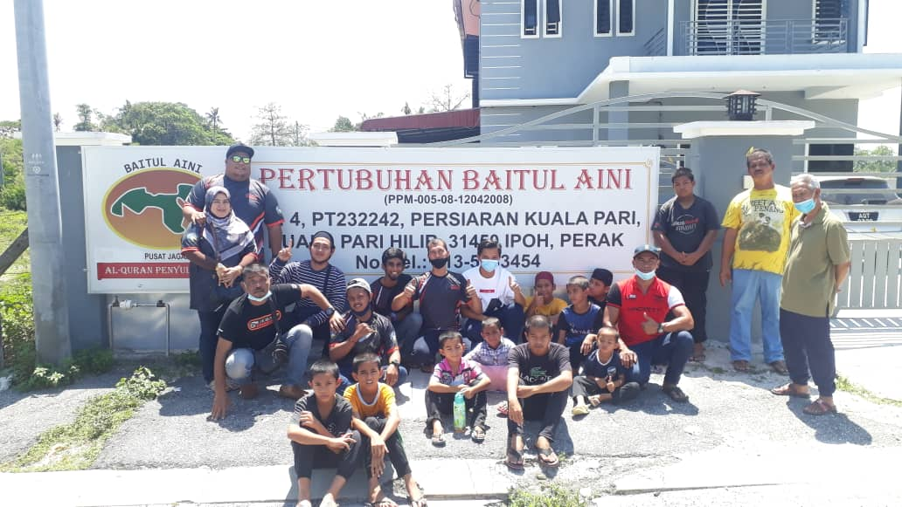

Pertubuhan Baitul Aini (2069-08-PRK) adalah sebuah pertubuhan yang berorientasikan kebajikan bagi memelihara nasib anak-anak yatim dan miskin melalui pendidikan yang berteraskan Islam. Pertubuhan ini ditubuhkan khusus untuk mendidik dan membela nasib anak-anak yatim dan miskin bagi menyediakan mereka menghadapi cabaran di masa akan datang.
Pertubuhan Baitul Aini berwawasan untuk melengkapkan pusat pengajian Islam Baitul Aini di mana semua jenis masyarakat Islam dapat mempelajari dan berkongsi ilmu agama dan pengajian Al-Quran. Pengajar-pengajar dan penceramah akan berkumpul di pusat ini dan ilmu-ilmu akhirat dapat disebarkan bukan sahaja kepada pelajar tahfiz dan anak yatim Baitul Aini, tetapi juga orang awam terutama warga emas pada masa hadapan.
Oleh kerana Pertubuhan Baitul Aini adalah pertubuhan amal/sukarela yang tidak bermotifkan keuntungan, ia melaksanakan pelbagai aktiviti dan program serta projek pembangunan Islam di atas permintaan orang awam, berdasarkan sumbangan serba sedikit daripada orang ramai, institusi awam dan swasta.
Sejak penubuhan, selain mendidik anak-anak yatim dan miskin, Pertubuhan Baitul Aini juga telah berjaya dan secara berterusan:
- merealisasikan hasrat pewakaf dan penyumbang untuk membangunkan pusat kebajikan dengan infrastruktur yang lengkap
- membangunkan surau tahfiz sebagai pusat ibadah dan komuniti untuk orang ramai
- mewujudkan peluang pekerjaan kepada golongan yang kurang berada
- melahirkan pekerja atau pengajar yang berkebolehan untuk mengurus pusat kebajikan atau pusat tahfiz
Semoga dengan kerjasama dan sokongan padu dari pelbagai pihak akan dapat merealisasikan impian dan hasrat murni yang berterusan ini. Insyaallah.
INFO PELAJAR